2025 Higher Computing Science questions
Source: Scottish Qualifications Authority (SQA) / Qualifications Scotland. This is a StemInteract HTML companion, not an official HTML edition. Selectable text is supplied alongside original page images. Use the images or original PDF for equations, powers, fractions, vector notation, tables and diagrams; text extraction cannot fully preserve mathematical layout.
Jump to a question
PDF page 1
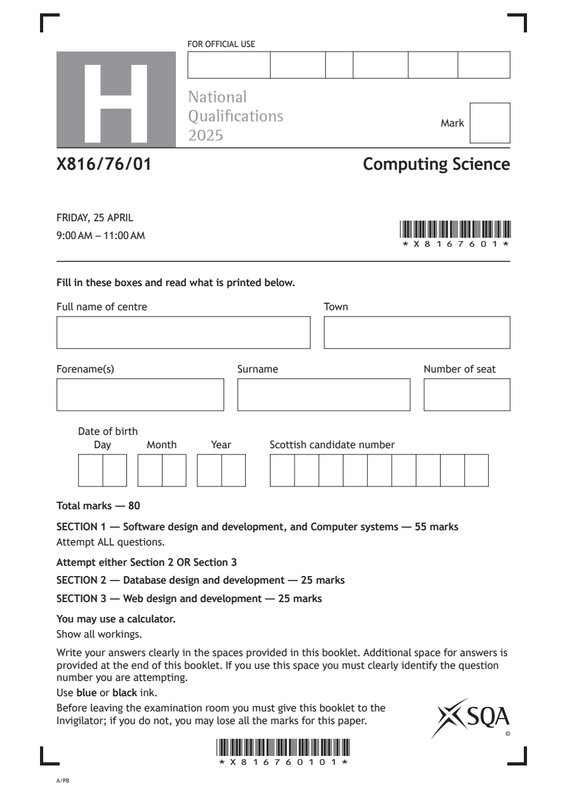
Selectable page text
FOR OFFICIAL USE
H
National
Qualications
Mark
2025
X816/76/01 Computing Science
FRIDAY, 25 APRIL
9:00 AM – 11:00 AM
*X8167601*
Fill in these boxes and read what is printed below.
Full name of centre Town
Forename(s) Surname Number of seat
Date of birth
Day Month Year Scottish candidate number
Total marks — 80
SECTION 1 — Software design and development, and Computer systems — 55 marks
Attempt ALL questions.
Attempt either Section 2 OR Section 3
SECTION 2 — Database design and development — 25 marks
SECTION 3 — Web design and development — 25 marks
You may use a calculator.
Show all workings.
Write your answers clearly in the spaces provided in this booklet. Additional space for answers is
provided at the end of this booklet. If you use this space you must clearly identify the question
number you are attempting.
Use blue or black ink.
Before leaving the examination room you must give this booklet to the
Invigilator; if you do not, you may lose all the marks for this paper.
©
*X816760101*
A/PBPDF page 2
Question 1Question 2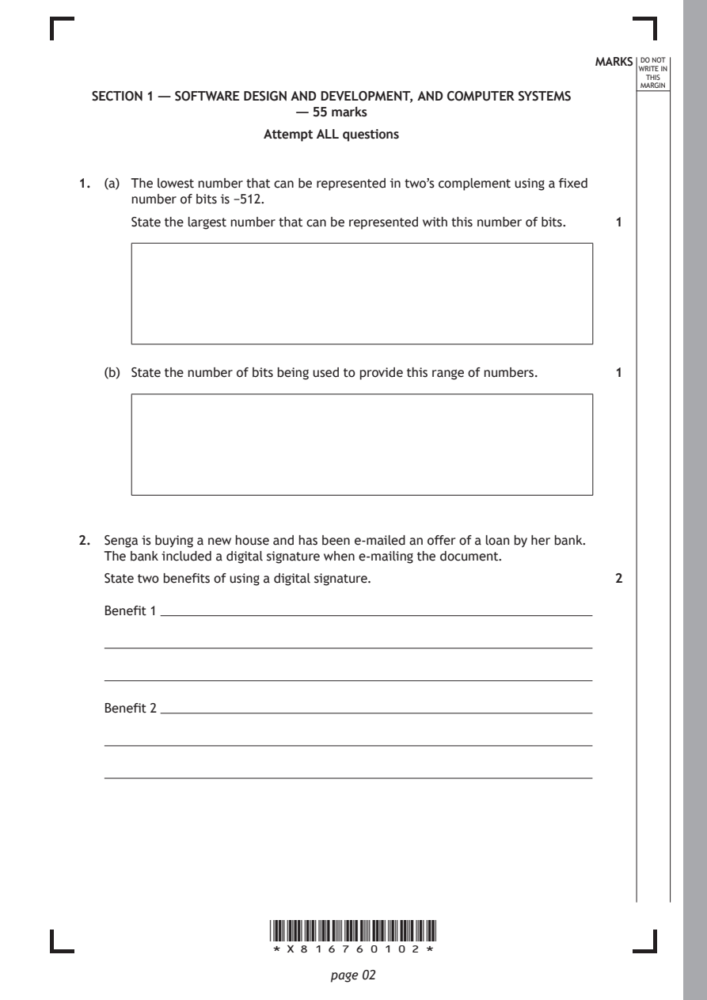
Selectable page text
MARKS DO NOT
WRITE IN
THIS
MARGIN
SECTION 1 — SOFTWARE DESIGN AND DEVELOPMENT, AND COMPUTER SYSTEMS
— 55 marks
Attempt ALL questions
1. (a) The lowest number that can be represented in two’s complement using a fixed
number of bits is −512.
State the largest number that can be represented with this number of bits. 1
(b) State the number of bits being used to provide this range of numbers. 1
2. Senga is buying a new house and has been e-mailed an offer of a loan by her bank.
The bank included a digital signature when e-mailing the document.
State two benefits of using a digital signature. 2
Benefit 1
Benefit 2
*X816760102*
page 02PDF page 3
Question 3Question 4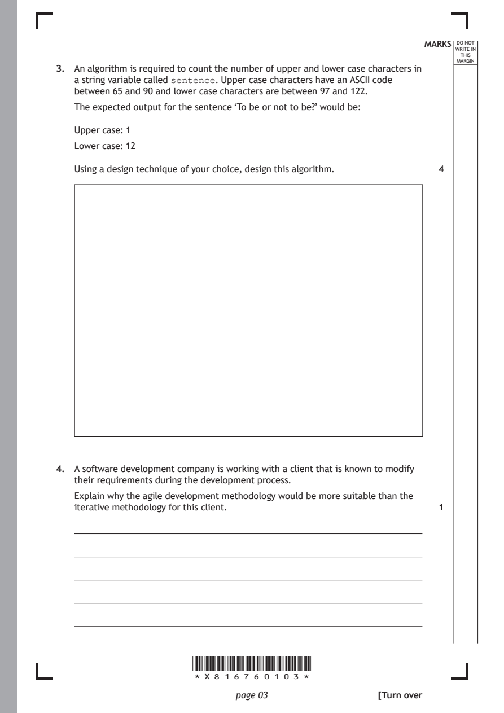
Selectable page text
MARKS DO NOT
WRITE IN
THIS
MARGIN
3. An algorithm is required to count the number of upper and lower case characters in
a string variable called . Upper case characters have an ASCII code
sentence
between 65 and 90 and lower case characters are between 97 and 122.
The expected output for the sentence ‘To be or not to be?’ would be:
Upper case: 1
Lower case: 12
Using a design technique of your choice, design this algorithm. 4
4. A software development company is working with a client that is known to modify
their requirements during the development process.
Explain why the agile development methodology would be more suitable than the
iterative methodology for this client. 1
*X816760103*
page 03 [Turn overPDF page 4
Question 5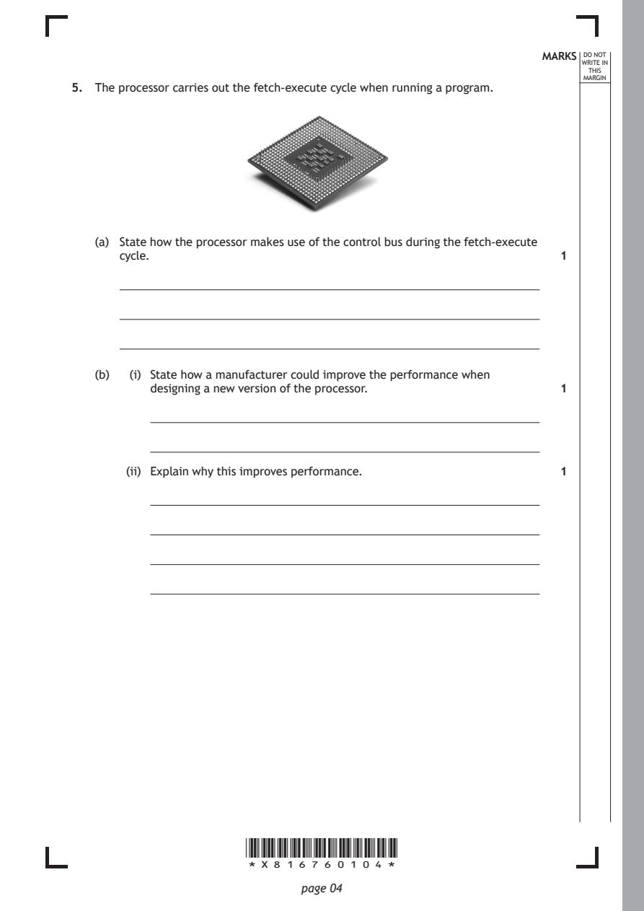
Selectable page text
MARKS DO NOT
WRITE IN
THIS
MARGIN
5. The processor carries out the fetch-execute cycle when running a program.
(a) State how the processor makes use of the control bus during the fetch-execute
cycle. 1
(b) (i) State how a manufacturer could improve the performance when
designing a new version of the processor. 1
(ii) Explain why this improves performance. 1
*X816760104*
page 04PDF page 5
Question 6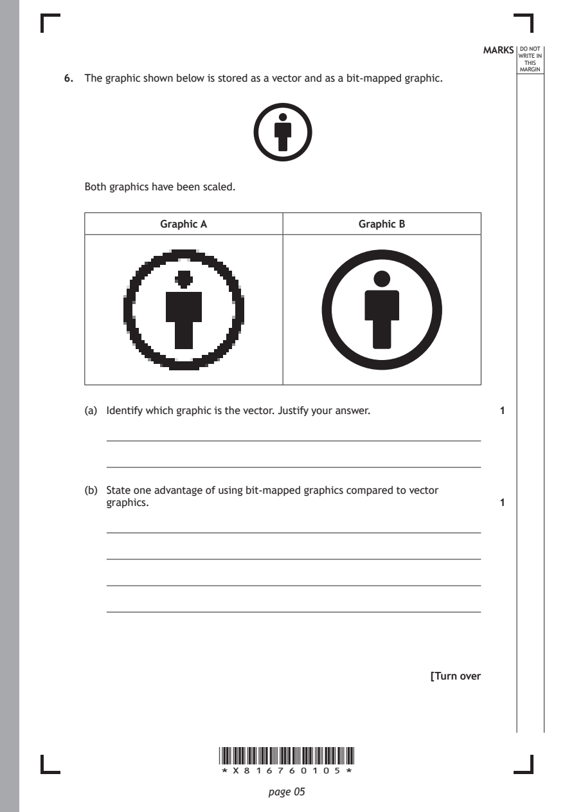
Selectable page text
MARKS DO NOT
WRITE IN
THIS
MARGIN
6. The graphic shown below is stored as a vector and as a bit-mapped graphic.
Both graphics have been scaled.
Graphic A Graphic B
(a) Identify which graphic is the vector. Justify your answer. 1
(b) State one advantage of using bit-mapped graphics compared to vector
graphics. 1
[Turn over
*X816760105*
page 05PDF page 6
Question 7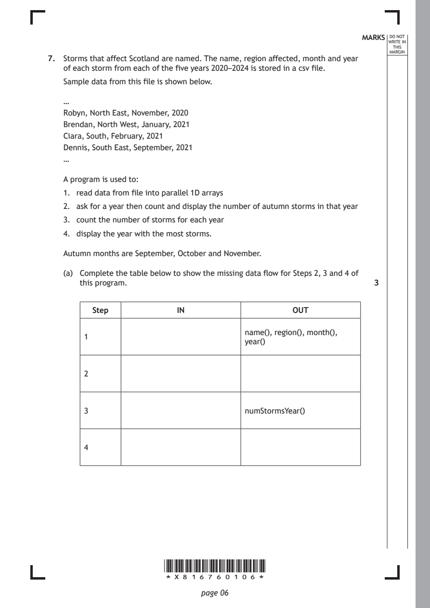
Selectable page text
MARKS DO NOT
WRITE IN
THIS
MARGIN
7. Storms that affect Scotland are named. The name, region affected, month and year
of each storm from each of the five years 2020–2024 is stored in a csv file.
Sample data from this file is shown below.
…
Robyn, North East, November, 2020
Brendan, North West, January, 2021
Ciara, South, February, 2021
Dennis, South East, September, 2021
…
A program is used to:
1. read data from file into parallel 1D arrays
2. ask for a year then count and display the number of autumn storms in that year
3. count the number of storms for each year
4. display the year with the most storms.
Autumn months are September, October and November.
(a) Complete the table below to show the missing data flow for Steps 2, 3 and 4 of
this program. 3
Step IN OUT
name(), region(), month(),
1
year()
2
3 numStormsYear()
4
*X816760106*
page 06PDF page 7
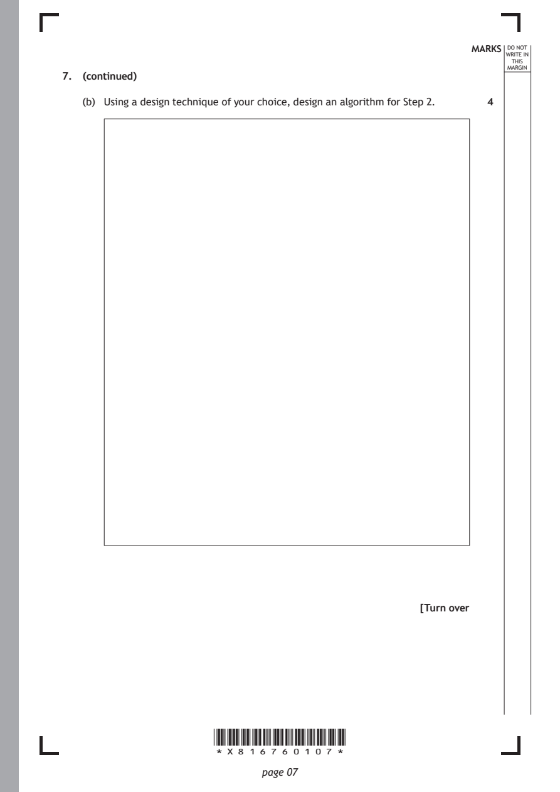
Selectable page text
MARKS DO NOT
WRITE IN
THIS
MARGIN
7. (continued)
(b) Using a design technique of your choice, design an algorithm for Step 2. 4
[Turn over
*X816760107*
page 07PDF page 8
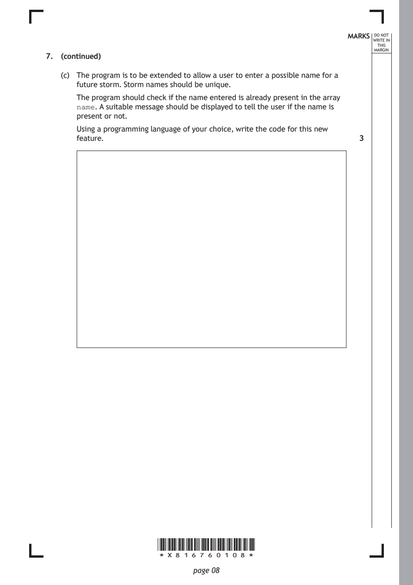
Selectable page text
MARKS DO NOT
WRITE IN
THIS
MARGIN
7. (continued)
(c) The program is to be extended to allow a user to enter a possible name for a
future storm. Storm names should be unique.
The program should check if the name entered is already present in the array
. A suitable message should be displayed to tell the user if the name is
name
present or not.
Using a programming language of your choice, write the code for this new
feature. 3
*X816760108*
page 08PDF page 9
Question 8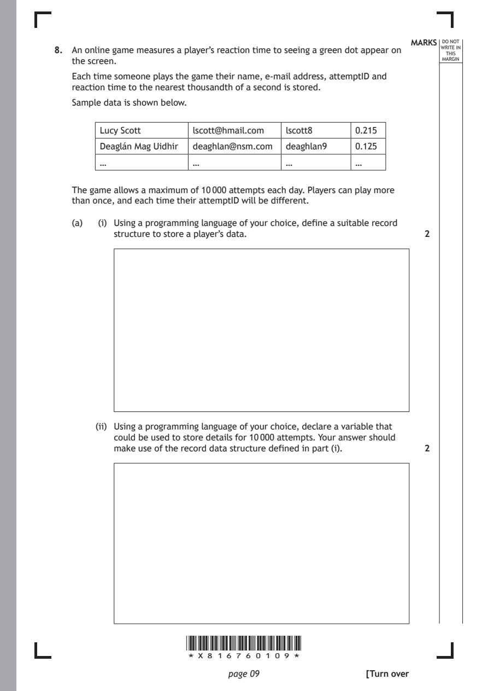
Selectable page text
MARKS DO NOT
8. An online game measures a player’s reaction time to seeing a green dot appear on WRITE IN
THIS
the screen. MARGIN
Each time someone plays the game their name, e-mail address, attemptID and
reaction time to the nearest thousandth of a second is stored.
Sample data is shown below.
Lucy Scott lscott@hmail.com lscott8 0.215
Deaglán Mag Uidhir deaghlan@nsm.com deaghlan9 0.125
… … … …
The game allows a maximum of 10 000 attempts each day. Players can play more
than once, and each time their attemptID will be different.
(a) (i) Using a programming language of your choice, define a suitable record
structure to store a player’s data. 2
(ii) Using a programming language of your choice, declare a variable that
could be used to store details for 10 000 attempts. Your answer should
make use of the record data structure defined in part (i). 2
*X816760109*
page 09 [Turn overPDF page 10
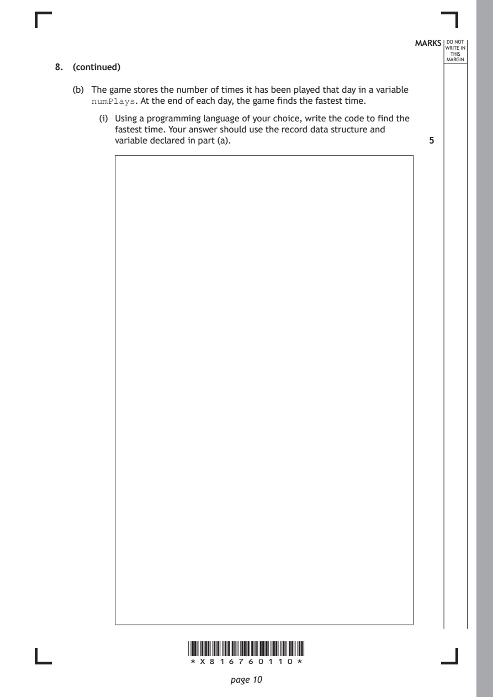
Selectable page text
MARKS DO NOT
WRITE IN
THIS
MARGIN
8. (continued)
(b) The game stores the number of times it has been played that day in a variable
. At the end of each day, the game finds the fastest time.
numPlays
(i) Using a programming language of your choice, write the code to find the
fastest time. Your answer should use the record data structure and
variable declared in part (a). 5
*X816760110*
page 10PDF page 11
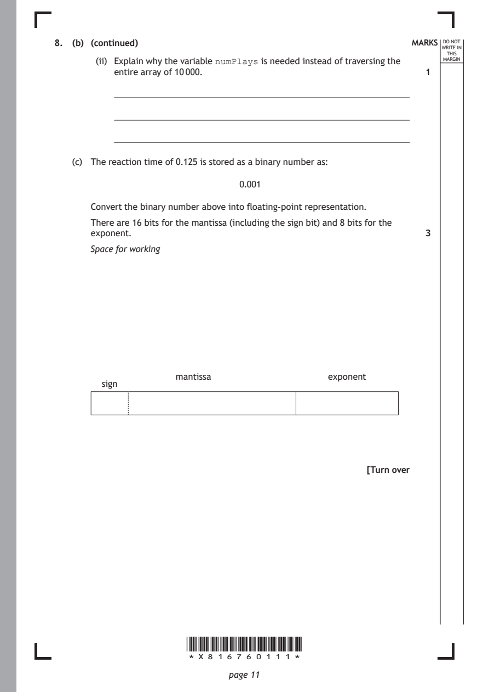
Selectable page text
8. (b) (continued) MARKS DO NOT
WRITE IN
THIS
(ii) Explain why the variable is needed instead of traversing the MARGIN
numPlays
entire array of 10 000. 1
(c) The reaction time of 0.125 is stored as a binary number as:
0.001
Convert the binary number above into floating-point representation.
There are 16 bits for the mantissa (including the sign bit) and 8 bits for the
exponent. 3
Space for working
mantissa exponent
sign
[Turn over
*X816760111*
page 11PDF page 12
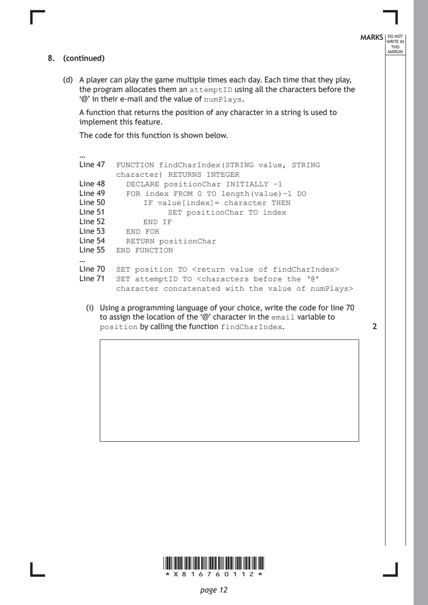
Selectable page text
MARKS DO NOT
WRITE IN
THIS
MARGIN
8. (continued)
(d) A player can play the game multiple times each day. Each time that they play,
the program allocates them an using all the characters before the
attemptID
‘@’ in their e-mail and the value of .
numPlays
A function that returns the position of any character in a string is used to
implement this feature.
The code for this function is shown below.
…
Line 47
FUNCTION findCharIndex(STRING value, STRING
character) RETURNS INTEGER
Line 48
DECLARE positionChar INITIALLY −1
Line 49
FOR index FROM 0 TO length(value)−1 DO
Line 50
IF value[index]= character THEN
Line 51
SET positionChar TO index
Line 52
END IF
Line 53
END FOR
Line 54
RETURN positionChar
Line 55
END FUNCTION
…
Line 70
SET position TO <return value of findCharIndex>
Line 71
SET attemptID TO <characters before the ‘@’
character concatenated with the value of numPlays>
(i) Using a programming language of your choice, write the code for line 70
to assign the location of the ‘@’ character in the variable to
email
by calling the function . 2
position findCharIndex
*X816760112*
page 12PDF page 13
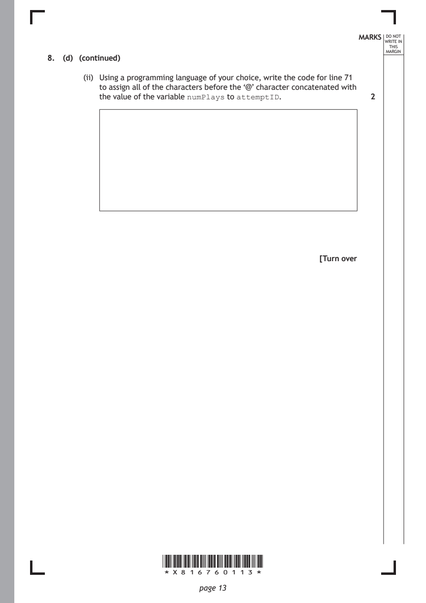
Selectable page text
MARKS DO NOT
WRITE IN
THIS
MARGIN
8. (d) (continued)
(ii) Using a programming language of your choice, write the code for line 71
to assign all of the characters before the ‘@’ character concatenated with
the value of the variable to . 2
numPlays attemptID
[Turn over
*X816760113*
page 13PDF page 14
Question 9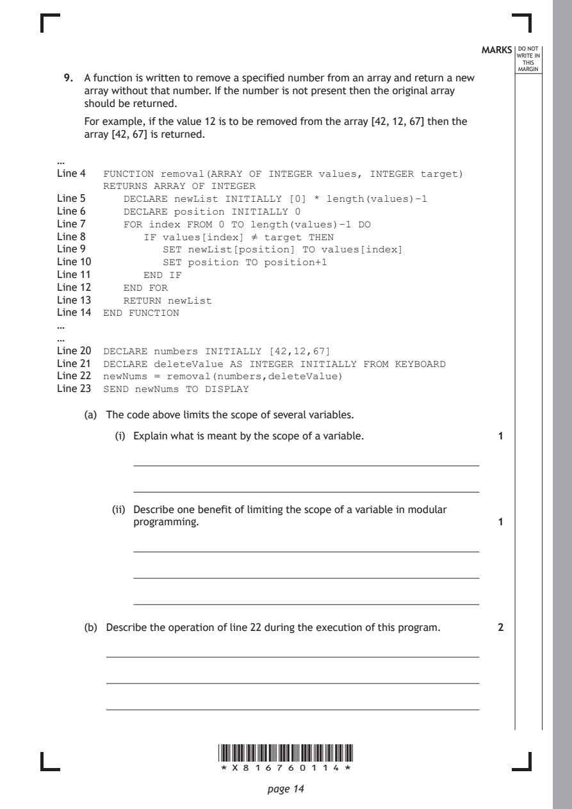
Selectable page text
MARKS DO NOT
WRITE IN
THIS
MARGIN
9. A function is written to remove a specified number from an array and return a new
array without that number. If the number is not present then the original array
should be returned.
For example, if the value 12 is to be removed from the array [42, 12, 67] then the
array [42, 67] is returned.
…
Line 4
FUNCTION removal(ARRAY OF INTEGER values, INTEGER target)
RETURNS ARRAY OF INTEGER
Line 5
DECLARE newList INITIALLY [0] * length(values)−1
Line 6
DECLARE position INITIALLY 0
Line 7
FOR index FROM 0 TO length(values)−1 DO
Line 8
IF values[index] ≠ target THEN
Line 9
SET newList[position] TO values[index]
Line 10
SET position TO position+1
Line 11
END IF
Line 12
END FOR
Line 13
RETURN newList
Line 14
END FUNCTION
…
…
Line 20
DECLARE numbers INITIALLY [42,12,67]
Line 21
DECLARE deleteValue AS INTEGER INITIALLY FROM KEYBOARD
Line 22
newNums = removal(numbers,deleteValue)
Line 23
SEND newNums TO DISPLAY
(a) The code above limits the scope of several variables.
(i) Explain what is meant by the scope of a variable. 1
(ii) Describe one benefit of limiting the scope of a variable in modular
programming. 1
(b) Describe the operation of line 22 during the execution of this program. 2
*X816760114*
page 14PDF page 15
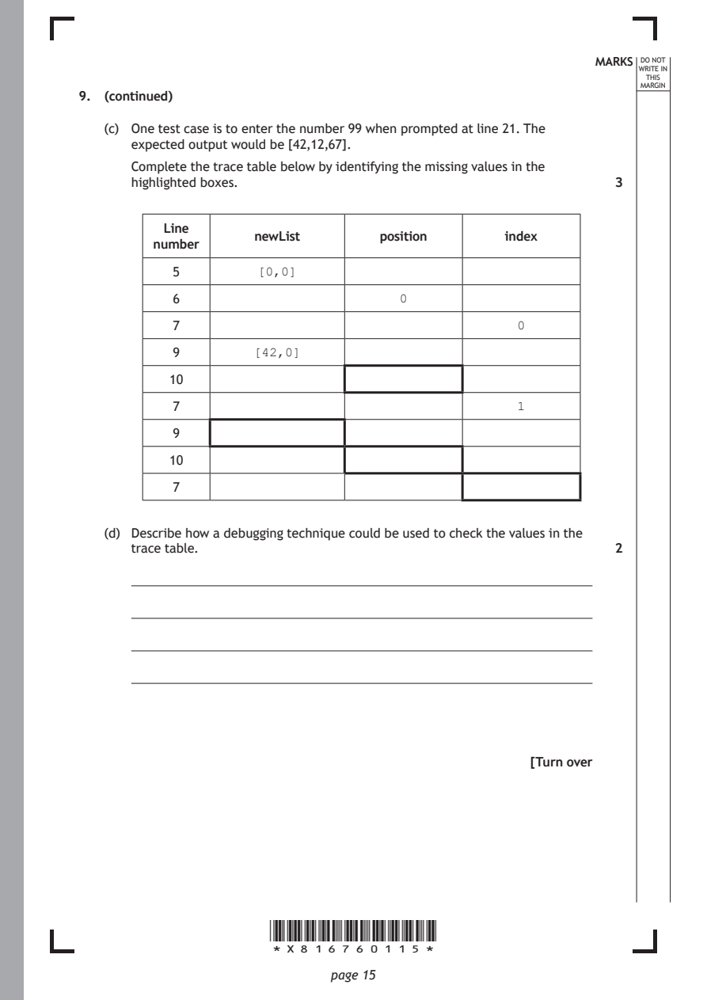
Selectable page text
MARKS DO NOT
WRITE IN
THIS
MARGIN
9. (continued)
(c) One test case is to enter the number 99 when prompted at line 21. The
expected output would be [42,12,67].
Complete the trace table below by identifying the missing values in the
highlighted boxes. 3
Line
newList position index
number
5
[0,0]
6
0
7
0
9
[42,0]
10
7
1
9
10
7
(d) Describe how a debugging technique could be used to check the values in the
trace table. 2
[Turn over
*X816760115*
page 15PDF page 16
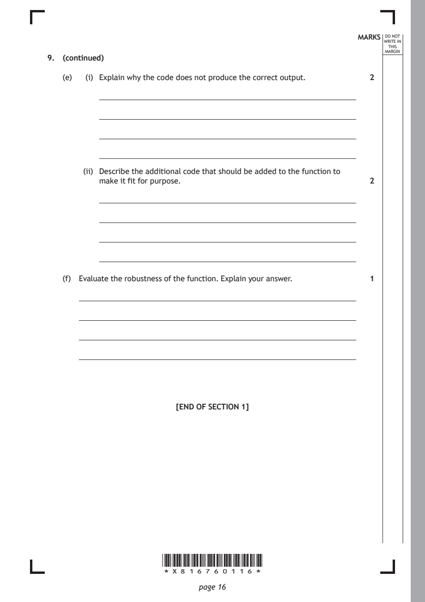
Selectable page text
MARKS DO NOT
WRITE IN
THIS
MARGIN
9. (continued)
(e) (i) Explain why the code does not produce the correct output. 2
(ii) Describe the additional code that should be added to the function to
make it fit for purpose. 2
(f) Evaluate the robustness of the function. Explain your answer. 1
[END OF SECTION 1]
*X816760116*
page 16PDF page 17
Question 10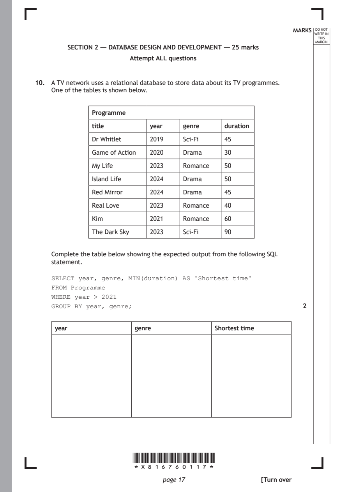
Selectable page text
MARKS DO NOT
WRITE IN
THIS
MARGIN
SECTION 2 — DATABASE DESIGN AND DEVELOPMENT — 25 marks
Attempt ALL questions
10. A TV network uses a relational database to store data about its TV programmes.
One of the tables is shown below.
Programme
title year genre duration
Dr Whitlet 2019 Sci-Fi 45
Game of Action 2020 Drama 30
My Life 2023 Romance 50
Island Life 2024 Drama 50
Red Mirror 2024 Drama 45
Real Love 2023 Romance 40
Kim 2021 Romance 60
The Dark Sky 2023 Sci-Fi 90
Complete the table below showing the expected output from the following SQL
statement.
SELECT year, genre, MIN(duration) AS 'Shortest time'
FROM Programme
WHERE year > 2021
2
GROUP BY year, genre;
year genre Shortest time
*X816760117*
page 17 [Turn overPDF page 18
Question 11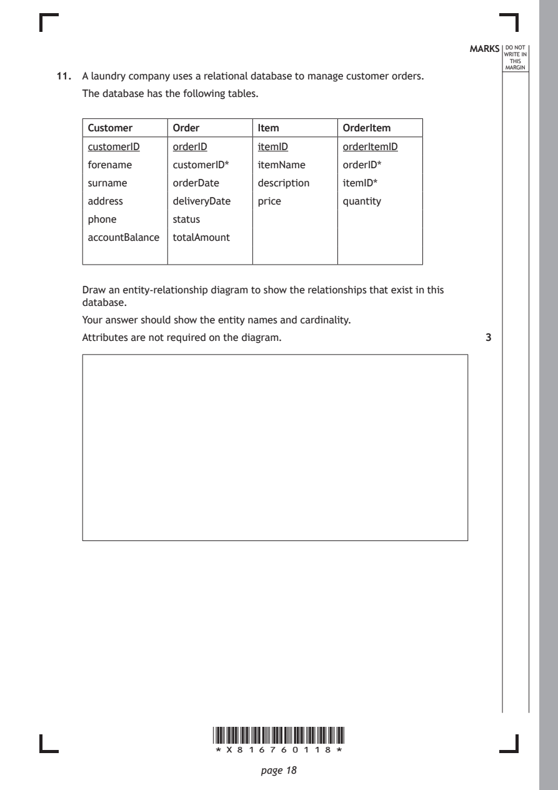
Selectable page text
MARKS DO NOT
WRITE IN
THIS
MARGIN
11. A laundry company uses a relational database to manage customer orders.
The database has the following tables.
Customer Order Item OrderItem
customerID orderID itemID orderItemID
forename customerID* itemName orderID*
surname orderDate description itemID*
address deliveryDate price quantity
phone status
accountBalance totalAmount
Draw an entity-relationship diagram to show the relationships that exist in this
database.
Your answer should show the entity names and cardinality.
Attributes are not required on the diagram. 3
*X816760118*
page 18PDF page 19
Question 12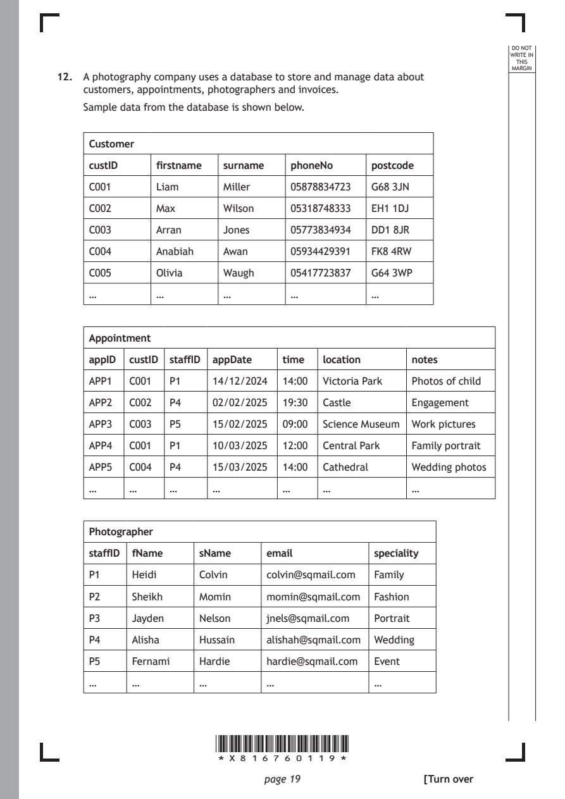
Selectable page text
DO NOT
WRITE IN
THIS
MARGIN
12. A photography company uses a database to store and manage data about
customers, appointments, photographers and invoices.
Sample data from the database is shown below.
Customer
custID firstname surname phoneNo postcode
C001 Liam Miller 05878834723 G68 3JN
C002 Max Wilson 05318748333 EH1 1DJ
C003 Arran Jones 05773834934 DD1 8JR
C004 Anabiah Awan 05934429391 FK8 4RW
C005 Olivia Waugh 05417723837 G64 3WP
… … … … …
Appointment
appID custID staffID appDate time location notes
APP1 C001 P1 14/12/2024 14:00 Victoria Park Photos of child
APP2 C002 P4 02/02/2025 19:30 Castle Engagement
APP3 C003 P5 15/02/2025 09:00 Science Museum Work pictures
APP4 C001 P1 10/03/2025 12:00 Central Park Family portrait
APP5 C004 P4 15/03/2025 14:00 Cathedral Wedding photos
… … … … … … …
Photographer
staffID fName sName email speciality
P1 Heidi Colvin colvin@sqmail.com Family
P2 Sheikh Momin momin@sqmail.com Fashion
P3 Jayden Nelson jnels@sqmail.com Portrait
P4 Alisha Hussain alishah@sqmail.com Wedding
P5 Fernami Hardie hardie@sqmail.com Event
… … … … …
*X816760119*
page 19 [Turn overPDF page 20
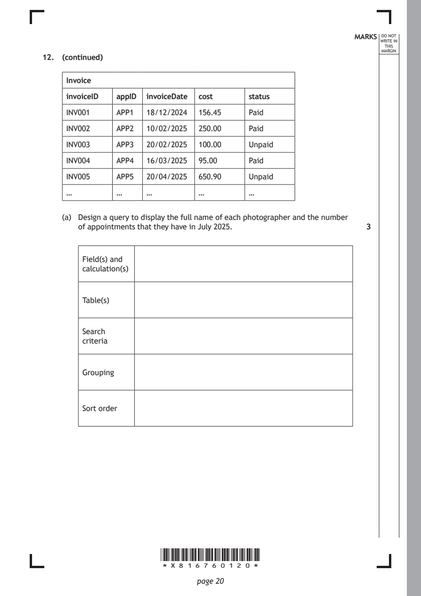
Selectable page text
MARKS DO NOT
WRITE IN
THIS
MARGIN
12. (continued)
Invoice
invoiceID appID invoiceDate cost status
INV001 APP1 18/12/2024 156.45 Paid
INV002 APP2 10/02/2025 250.00 Paid
INV003 APP3 20/02/2025 100.00 Unpaid
INV004 APP4 16/03/2025 95.00 Paid
INV005 APP5 20/04/2025 650.90 Unpaid
… … … … …
(a) Design a query to display the full name of each photographer and the number
of appointments that they have in July 2025. 3
Field(s) and
calculation(s)
Table(s)
Search
criteria
Grouping
Sort order
*X816760120*
page 20PDF page 21
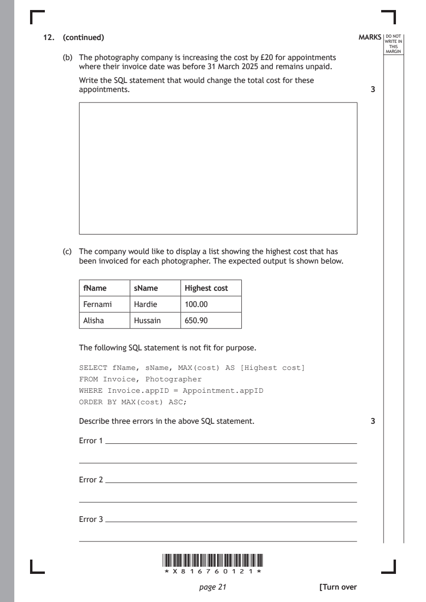
Selectable page text
12. (continued) MARKS DO NOT
WRITE IN
THIS
MARGIN
(b) The photography company is increasing the cost by £20 for appointments
where their invoice date was before 31 March 2025 and remains unpaid.
Write the SQL statement that would change the total cost for these
appointments. 3
(c) The company would like to display a list showing the highest cost that has
been invoiced for each photographer. The expected output is shown below.
fName sName Highest cost
Fernami Hardie 100.00
Alisha Hussain 650.90
The following SQL statement is not fit for purpose.
SELECT fName, sName, MAX(cost) AS [Highest cost]
FROM Invoice, Photographer
WHERE Invoice.appID = Appointment.appID
ORDER BY MAX(cost) ASC;
Describe three errors in the above SQL statement. 3
Error 1
Error 2
Error 3
*X816760121*
page 21 [Turn overPDF page 22
Question 13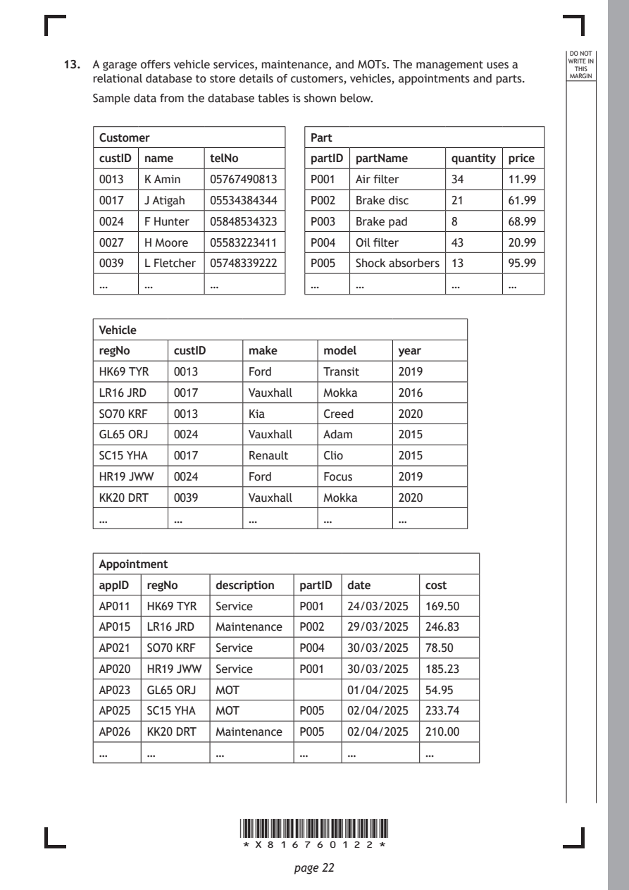
Selectable page text
DO NOT
13. A garage offers vehicle services, maintenance, and MOTs. The management uses a WRITE IN
THIS
relational database to store details of customers, vehicles, appointments and parts. MARGIN
Sample data from the database tables is shown below.
Customer Part
custID name telNo partID partName quantity price
0013 K Amin 05767490813 P001 Air filter 34 11.99
0017 J Atigah 05534384344 P002 Brake disc 21 61.99
0024 F Hunter 05848534323 P003 Brake pad 8 68.99
0027 H Moore 05583223411 P004 Oil filter 43 20.99
0039 L Fletcher 05748339222 P005 Shock absorbers 13 95.99
… … … … … … …
Vehicle
regNo custID make model year
HK69 TYR 0013 Ford Transit 2019
LR16 JRD 0017 Vauxhall Mokka 2016
SO70 KRF 0013 Kia Creed 2020
GL65 ORJ 0024 Vauxhall Adam 2015
SC15 YHA 0017 Renault Clio 2015
HR19 JWW 0024 Ford Focus 2019
KK20 DRT 0039 Vauxhall Mokka 2020
… … … … …
Appointment
appID regNo description partID date cost
AP011 HK69 TYR Service P001 24/03/2025 169.50
AP015 LR16 JRD Maintenance P002 29/03/2025 246.83
AP021 SO70 KRF Service P004 30/03/2025 78.50
AP020 HR19 JWW Service P001 30/03/2025 185.23
AP023 GL65 ORJ MOT 01/04/2025 54.95
AP025 SC15 YHA MOT P005 02/04/2025 233.74
AP026 KK20 DRT Maintenance P005 02/04/2025 210.00
… … … … … …
*X816760122*
page 22PDF page 23
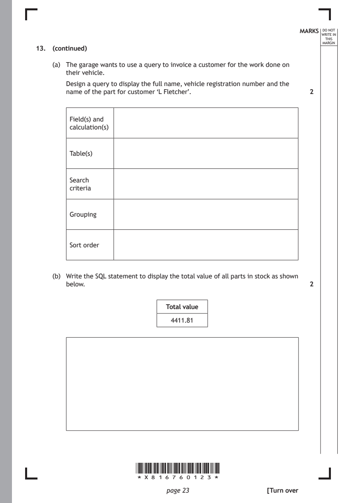
Selectable page text
MARKS DO NOT
WRITE IN
THIS
MARGIN
13. (continued)
(a) The garage wants to use a query to invoice a customer for the work done on
their vehicle.
Design a query to display the full name, vehicle registration number and the
name of the part for customer ‘L Fletcher’. 2
Field(s) and
calculation(s)
Table(s)
Search
criteria
Grouping
Sort order
(b) Write the SQL statement to display the total value of all parts in stock as shown
below. 2
Total value
4411.81
*X816760123*
page 23 [Turn overPDF page 24
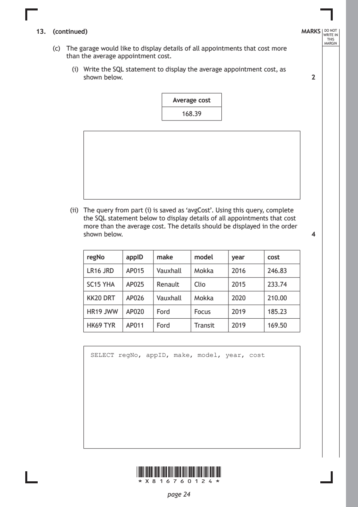
Selectable page text
13. (continued) MARKS DO NOT
WRITE IN
THIS
MARGIN
(c) The garage would like to display details of all appointments that cost more
than the average appointment cost.
(i) Write the SQL statement to display the average appointment cost, as
shown below. 2
Average cost
168.39
(ii) The query from part (i) is saved as ‘avgCost’. Using this query, complete
the SQL statement below to display details of all appointments that cost
more than the average cost. The details should be displayed in the order
shown below. 4
regNo appID make model year cost
LR16 JRD AP015 Vauxhall Mokka 2016 246.83
SC15 YHA AP025 Renault Clio 2015 233.74
KK20 DRT AP026 Vauxhall Mokka 2020 210.00
HR19 JWW AP020 Ford Focus 2019 185.23
HK69 TYR AP011 Ford Transit 2019 169.50
SELECT regNo, appID, make, model, year, cost
*X816760124*
page 24PDF page 25
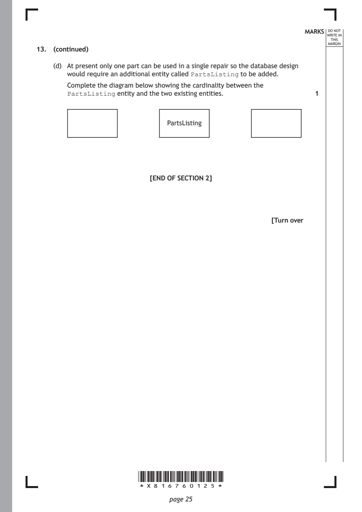
Selectable page text
MARKS DO NOT
WRITE IN
THIS
MARGIN
13. (continued)
(d) At present only one part can be used in a single repair so the database design
would require an additional entity called to be added.
PartsListing
Complete the diagram below showing the cardinality between the
entity and the two existing entities. 1
PartsListing
PartsListing
[END OF SECTION 2]
[Turn over
*X816760125*
page 25PDF page 26
Question 14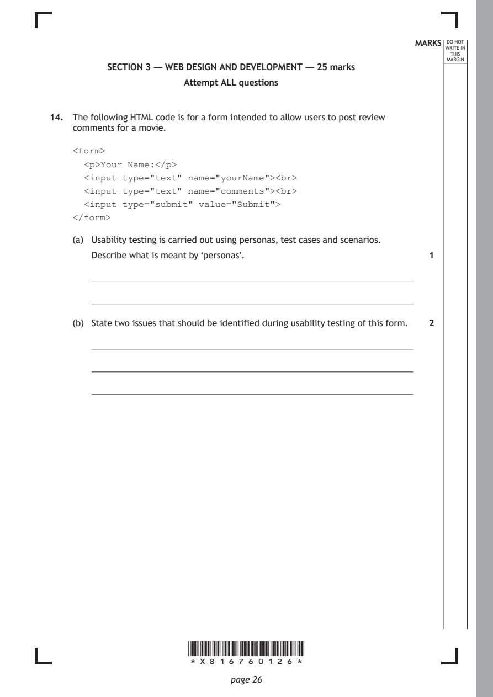
Selectable page text
MARKS DO NOT
WRITE IN
THIS
MARGIN
SECTION 3 — WEB DESIGN AND DEVELOPMENT — 25 marks
Attempt ALL questions
14. The following HTML code is for a form intended to allow users to post review
comments for a movie.
<form>
<p>Your Name:</p>
<input type="text" name="yourName"><br>
<input type="text" name="comments"><br>
<input type="submit" value="Submit">
</form>
(a) Usability testing is carried out using personas, test cases and scenarios.
Describe what is meant by ‘personas’. 1
(b) State two issues that should be identified during usability testing of this form. 2
*X816760126*
page 26PDF page 27
Question 15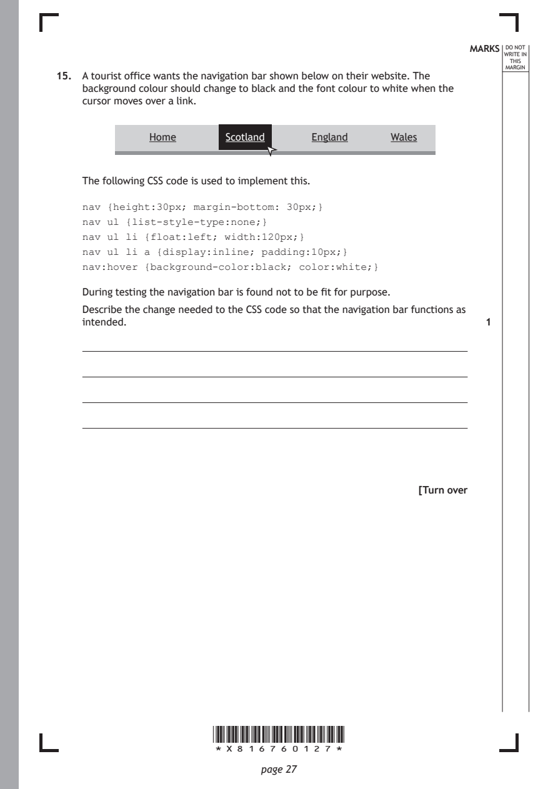
Selectable page text
MARKS DO NOT
WRITE IN
THIS
MARGIN
15. A tourist office wants the navigation bar shown below on their website. The
background colour should change to black and the font colour to white when the
cursor moves over a link.
Home Scotland England Wales
The following CSS code is used to implement this.
nav {height:30px; margin-bottom: 30px;}
nav ul {list-style-type:none;}
nav ul li {float:left; width:120px;}
nav ul li a {display:inline; padding:10px;}
nav:hover {background-color:black; color:white;}
During testing the navigation bar is found not to be fit for purpose.
Describe the change needed to the CSS code so that the navigation bar functions as
intended. 1
[Turn over
*X816760127*
page 27PDF page 28
Question 16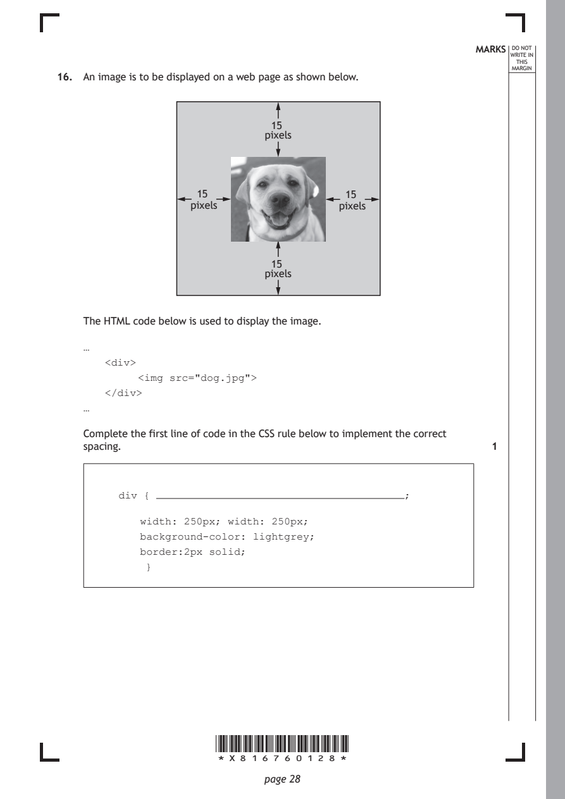
Selectable page text
MARKS DO NOT
WRITE IN
THIS
MARGIN
16. An image is to be displayed on a web page as shown below.
15
pixels
15 15
pixels pixels
15
pixels
The HTML code below is used to display the image.
…
<div>
<img src="dog.jpg">
</div>
…
Complete the first line of code in the CSS rule below to implement the correct
spacing. 1
�������������������������������������������������������������������������������������
div { ;
width: 250px; width: 250px;
background-color: lightgrey;
border:2px solid;
}
*X816760128*
page 28PDF page 29
Question 17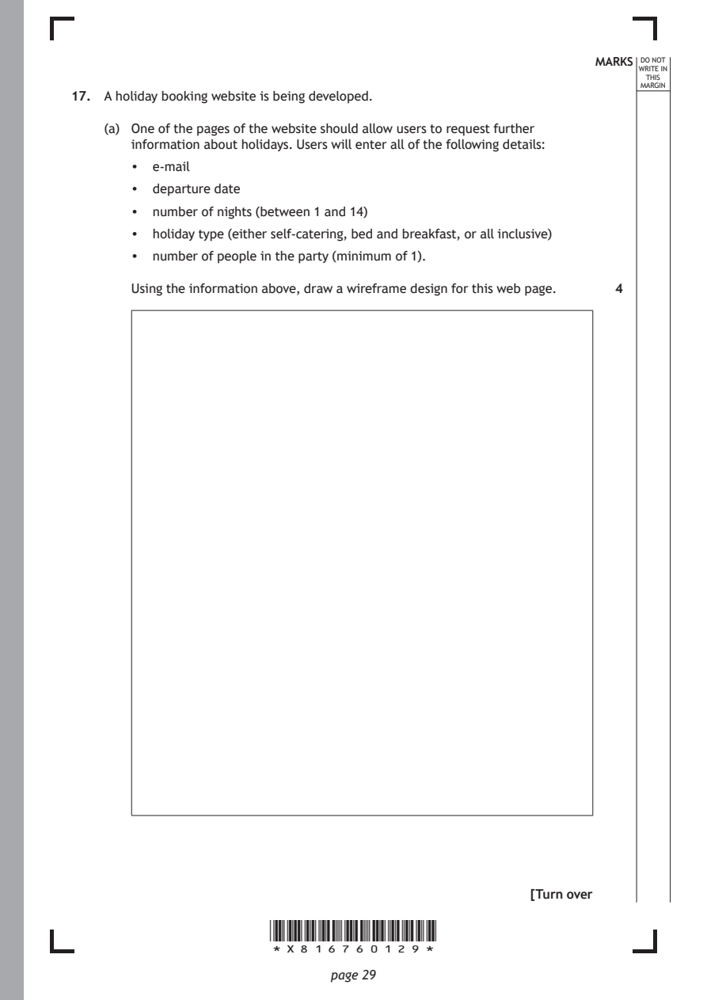
Selectable page text
MARKS DO NOT
WRITE IN
THIS
MARGIN
17. A holiday booking website is being developed.
(a) One of the pages of the website should allow users to request further
information about holidays. Users will enter all of the following details:
• e-mail
• departure date
• number of nights (between 1 and 14)
• holiday type (either self-catering, bed and breakfast, or all inclusive)
• number of people in the party (minimum of 1).
Using the information above, draw a wireframe design for this web page. 4
[Turn over
*X816760129*
page 29PDF page 30
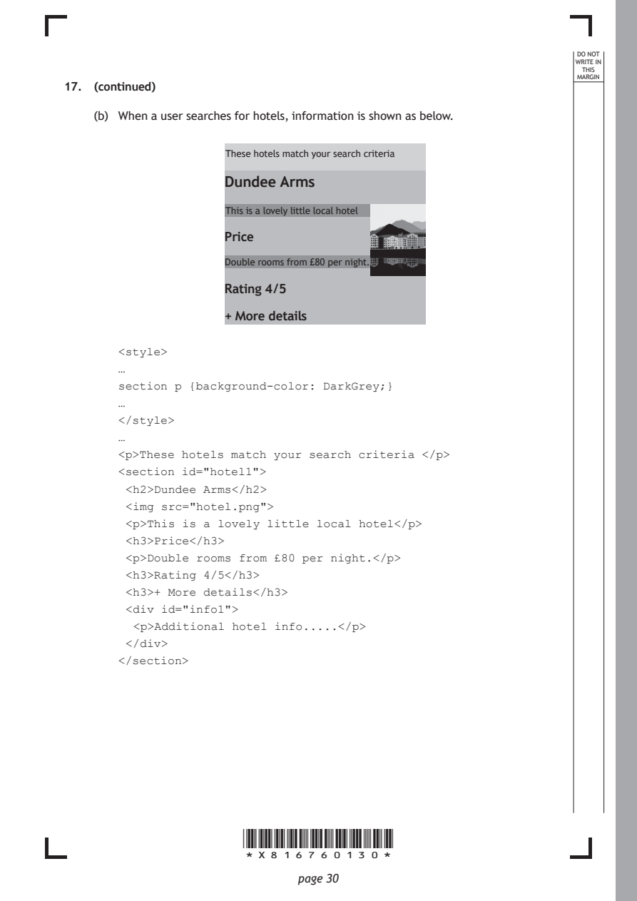
Selectable page text
DO NOT
WRITE IN
THIS
MARGIN
17. (continued)
(b) When a user searches for hotels, information is shown as below.
These hotels match your search criteria
Dundee Arms
This is a lovely little local hotel
Price
Double rooms from £80 per night.
Rating 4/5
+More details
<style>
…
section p {background-color: DarkGrey;}
…
</style>
…
<p>These hotels match your search criteria </p>
<section id="hotel1">
<h2>Dundee Arms</h2>
<img src="hotel.png">
<p>This is a lovely little local hotel</p>
<h3>Price</h3>
<p>Double rooms from £80 per night.</p>
<h3>Rating 4/5</h3>
<h3>+ More details</h3>
<div id="info1">
<p>Additional hotel info.....</p>
</div>
</section>
*X816760130*
page 30PDF page 31
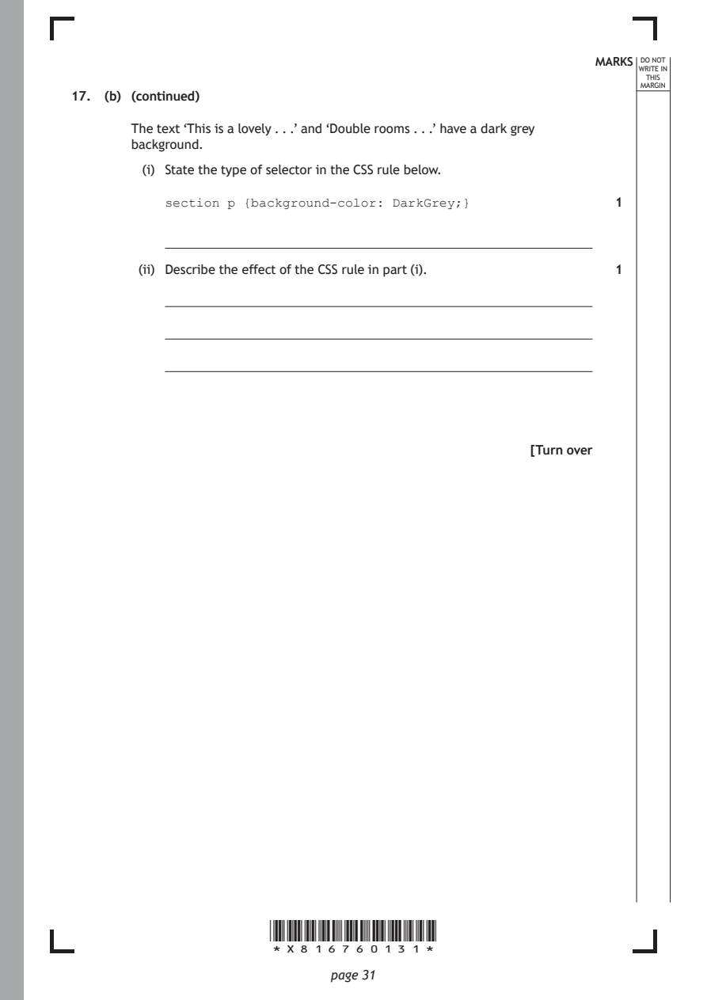
Selectable page text
MARKS DO NOT
WRITE IN
THIS
MARGIN
17. (b) (continued)
The text ‘This is a lovely . . .’ and ‘Double rooms . . .’ have a dark grey
background.
(i) State the type of selector in the CSS rule below.
1
section p {background-color: DarkGrey;}
(ii) Describe the effect of the CSS rule in part (i). 1
[Turn over
*X816760131*
page 31PDF page 32
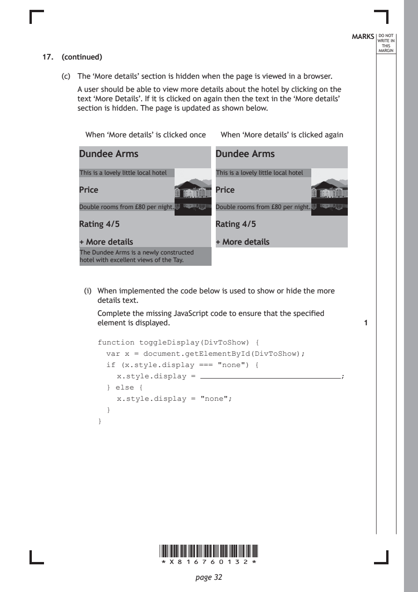
Selectable page text
MARKS DO NOT
WRITE IN
THIS
MARGIN
17. (continued)
(c) The ‘More details’ section is hidden when the page is viewed in a browser.
A user should be able to view more details about the hotel by clicking on the
text ‘More Details’. If it is clicked on again then the text in the ‘More details’
section is hidden. The page is updated as shown below.
When ‘More details’ is clicked once When ‘More details’ is clicked again
Dundee Arms Dundee Arms
This is a lovely little local hotel This is a lovely little local hotel
Price Price
Double rooms from £80 per night. Double rooms from £80 per night.
Rating 4/5 Rating 4/5
+ More details +More details
The Dundee Arms is a newly constructed
hotel with excellent views of the Tay.
(i) When implemented the code below is used to show or hide the more
details text.
Complete the missing JavaScript code to ensure that the specified
element is displayed. 1
function toggleDisplay(DivToShow) {
var x = document.getElementById(DivToShow);
if (x.style.display === "none") {
�����������������������������������������������������������������
x.style.display = ;
} else {
x.style.display = "none";
}
}
*X816760132*
page 32PDF page 33
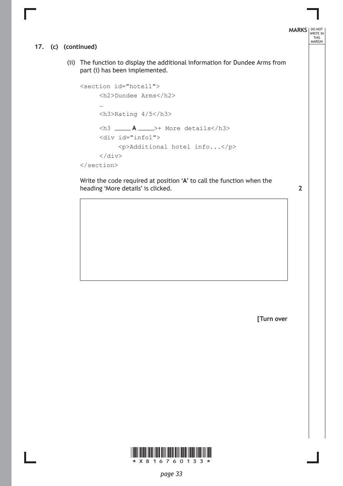
Selectable page text
MARKS DO NOT
WRITE IN
THIS
MARGIN
17. (c) (continued)
(ii) The function to display the additional information for Dundee Arms from
part (i) has been implemented.
<section id="hotel1">
<h2>Dundee Arms</h2>
…
<h3>Rating 4/5</h3>
��������� A ���������
<h3 >+ More details</h3>
<div id="info1">
<p>Additional hotel info...</p>
</div>
</section>
Write the code required at position ‘A’ to call the function when the
heading ‘More details’ is clicked. 2
[Turn over
*X816760133*
page 33PDF page 34
Question 18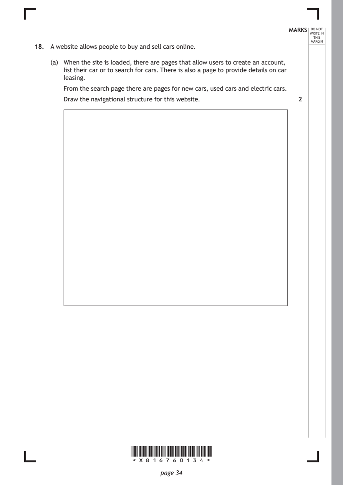
Selectable page text
MARKS DO NOT
WRITE IN
THIS
MARGIN
18. A website allows people to buy and sell cars online.
(a) When the site is loaded, there are pages that allow users to create an account,
list their car or to search for cars. There is also a page to provide details on car
leasing.
From the search page there are pages for new cars, used cars and electric cars.
Draw the navigational structure for this website. 2
*X816760134*
page 34PDF page 35
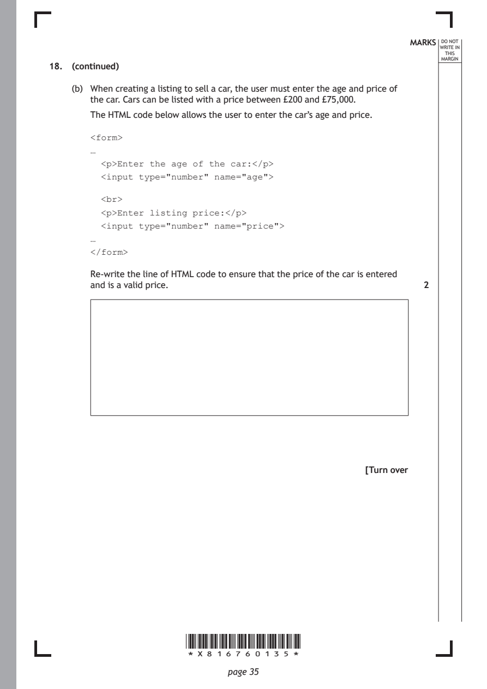
Selectable page text
MARKS DO NOT
WRITE IN
THIS
MARGIN
18. (continued)
(b) When creating a listing to sell a car, the user must enter the age and price of
the car. Cars can be listed with a price between £200 and £75,000.
The HTML code below allows the user to enter the car’s age and price.
<form>
…
<p>Enter the age of the car:</p>
<input type="number" name="age">
<br>
<p>Enter listing price:</p>
<input type="number" name="price">
…
</form>
Re-write the line of HTML code to ensure that the price of the car is entered
and is a valid price. 2
[Turn over
*X816760135*
page 35PDF page 36
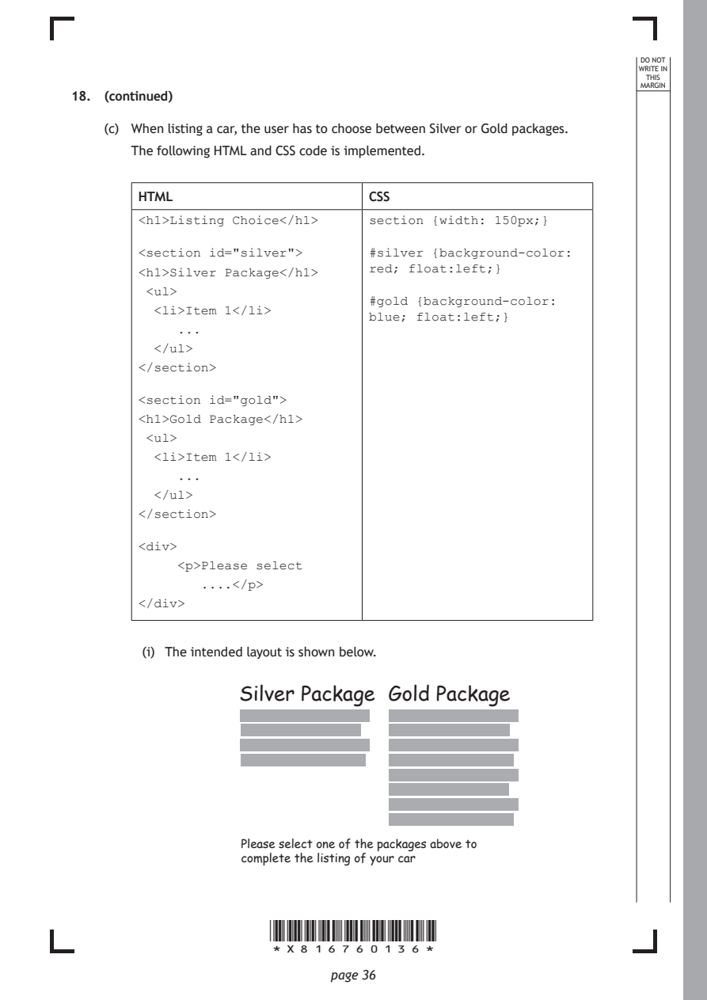
Selectable page text
DO NOT
WRITE IN
THIS
MARGIN
18. (continued)
(c) When listing a car, the user has to choose between Silver or Gold packages.
The following HTML and CSS code is implemented.
HTML CSS
<h1>Listing Choice</h1> section {width: 150px;}
<section id="silver"> #silver {background-color:
<h1>Silver Package</h1> red; float:left;}
<ul>
#gold {background-color:
<li>Item 1</li>
blue; float:left;}
...
</ul>
</section>
<section id="gold">
<h1>Gold Package</h1>
<ul>
<li>Item 1</li>
...
</ul>
</section>
<div>
<p>Please select
....</p>
</div>
(i) The intended layout is shown below.
Silver Package Gold Package
Please select one of the packages above to
complete the listing of your car
*X816760136*
page 36PDF page 37
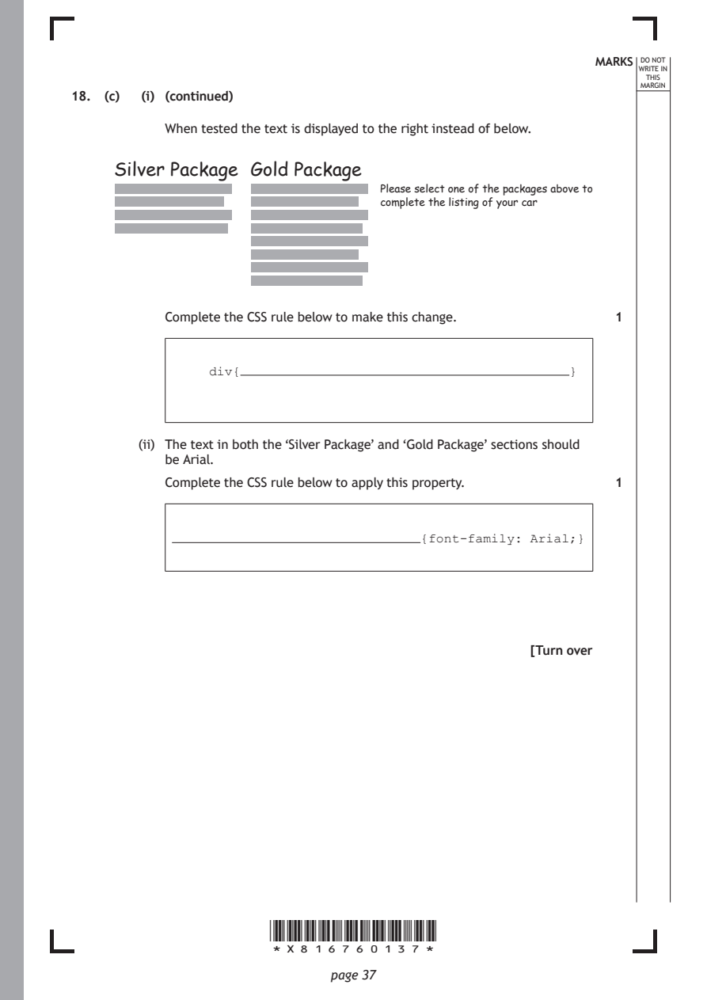
Selectable page text
MARKS DO NOT
WRITE IN
THIS
MARGIN
18. (c) (i) (continued)
When tested the text is displayed to the right instead of below.
Silver Package Gold Package
Please select one of the packages above to
complete the listing of your car
Complete the CSS rule below to make this change. 1
������������������������������������������������������������������������������������������
div{ }
(ii) The text in both the ‘Silver Package’ and ‘Gold Package’ sections should
be Arial.
Complete the CSS rule below to apply this property. 1
��������������������������������������������������������������������
{font-family: Arial;}
[Turn over
*X816760137*
page 37PDF page 38
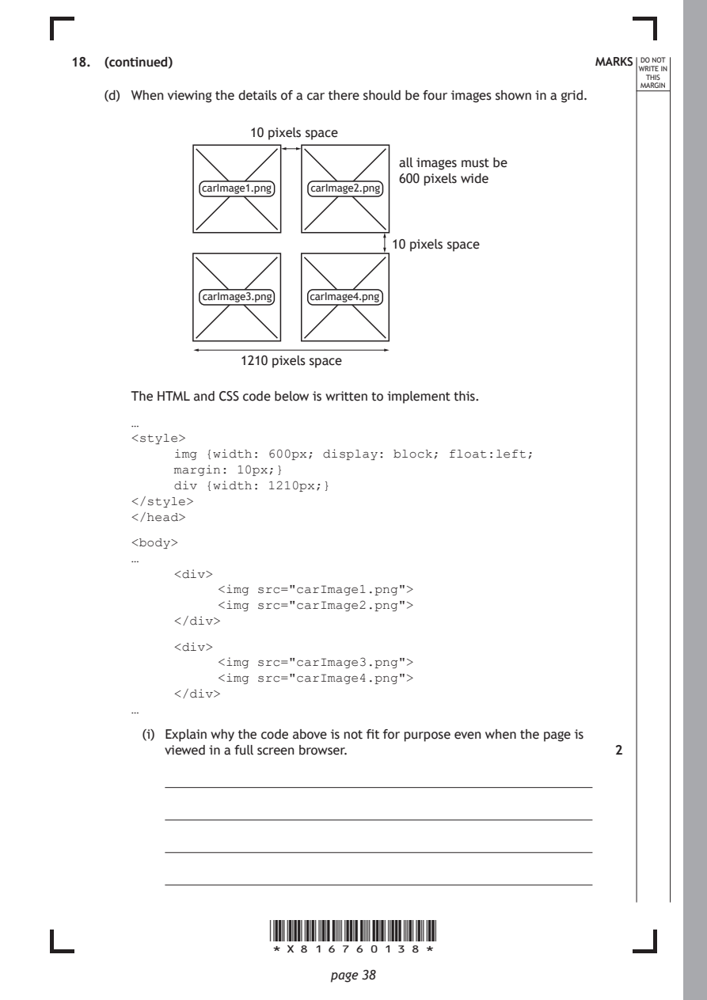
Selectable page text
18. (continued) MARKS DO NOT
WRITE IN
THIS
MARGIN
(d) When viewing the details of a car there should be four images shown in a grid.
10 pixels space
all images must be
600 pixels wide
carImage1.png carImage2.png
10 pixels space
carImage3.png carImage4.png
1210 pixels space
The HTML and CSS code below is written to implement this.
…
<style>
img {width: 600px; display: block; float:left;
margin: 10px;}
div {width: 1210px;}
</style>
</head>
<body>
…
<div>
<img src="carImage1.png">
<img src="carImage2.png">
</div>
<div>
<img src="carImage3.png">
<img src="carImage4.png">
</div>
…
(i) Explain why the code above is not fit for purpose even when the page is
viewed in a full screen browser. 2
*X816760138*
page 38PDF page 39
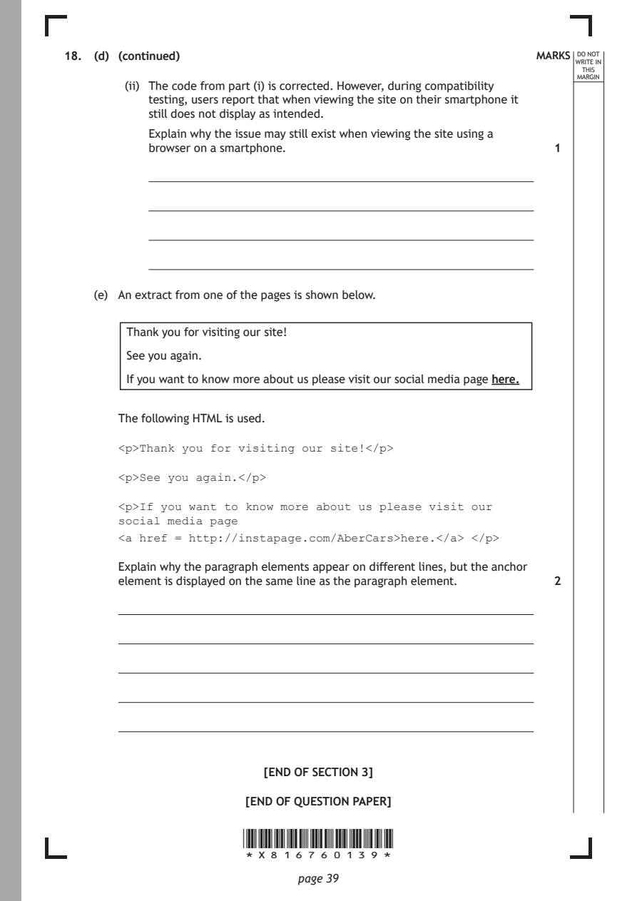
Selectable page text
18. (d) (continued) MARKS DO NOT
WRITE IN
THIS
MARGIN
(ii) The code from part (i) is corrected. However, during compatibility
testing, users report that when viewing the site on their smartphone it
still does not display as intended.
Explain why the issue may still exist when viewing the site using a
browser on a smartphone. 1
(e) An extract from one of the pages is shown below.
Thank you for visiting our site!
See you again.
If you want to know more about us please visit our social media page here.
The following HTML is used.
<p>Thank you for visiting our site!</p>
<p>See you again.</p>
<p>If you want to know more about us please visit our
social media page
<a href = http://instapage.com/AberCars>here.</a> </p>
Explain why the paragraph elements appear on different lines, but the anchor
element is displayed on the same line as the paragraph element. 2
[END OF SECTION 3]
[END OF QUESTION PAPER]
*X816760139*
page 39PDF page 40
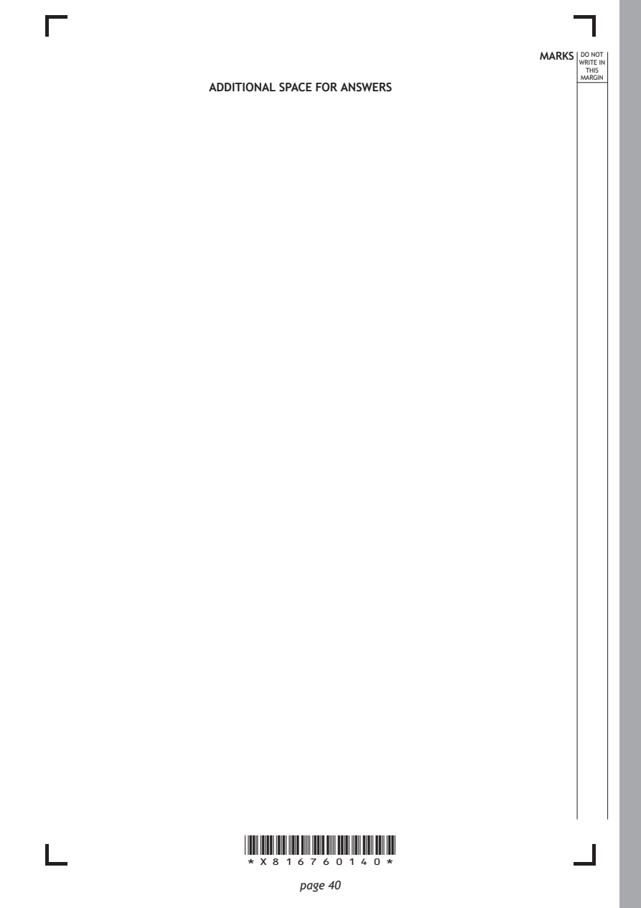
Selectable page text
MARKS DO NOT
WRITE IN
THIS
MARGIN
ADDITIONAL SPACE FOR ANSWERS
*X816760140*
page 40PDF page 41

Selectable page text
MARKS DO NOT
WRITE IN
THIS
MARGIN
ADDITIONAL SPACE FOR ANSWERS
*X816760141*
page 41PDF page 42
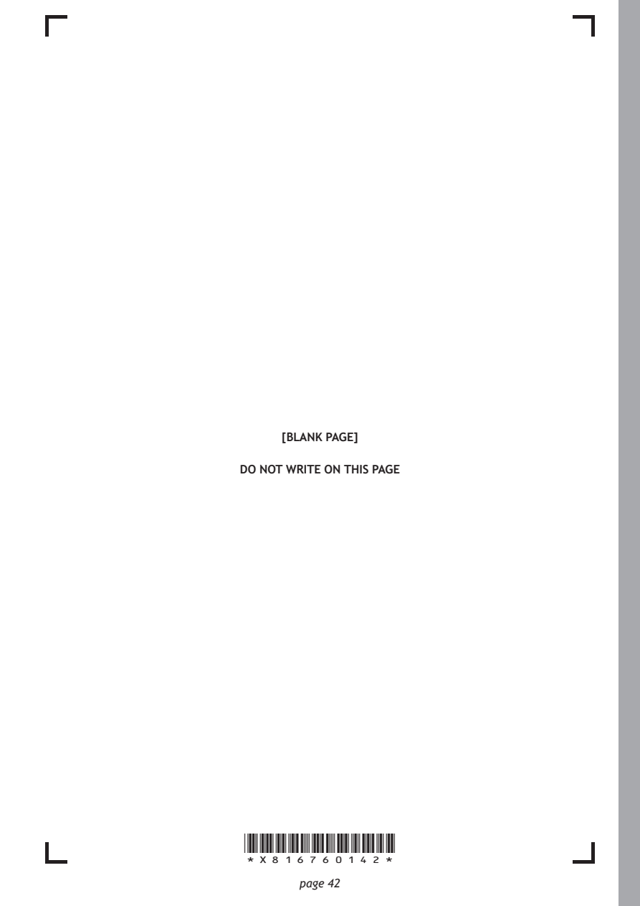
Selectable page text
[BLANK PAGE]
DO NOT WRITE ON THIS PAGE
*X816760142*
page 42PDF page 43

Selectable page text
[BLANK PAGE]
DO NOT WRITE ON THIS PAGE
*X816760143*
page 43PDF page 44
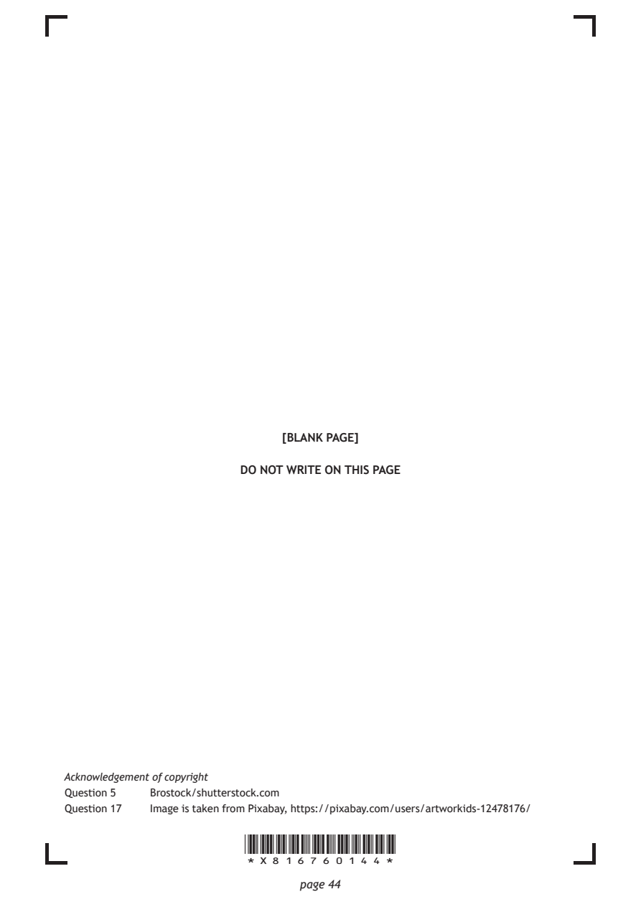
Selectable page text
[BLANK PAGE]
DO NOT WRITE ON THIS PAGE
Acknowledgement of copyright
Question 5 Brostock/shutterstock.com
Question 17 Image is taken from Pixabay, https://pixabay.com/users/artworkids-12478176/
*X816760144*
page 44